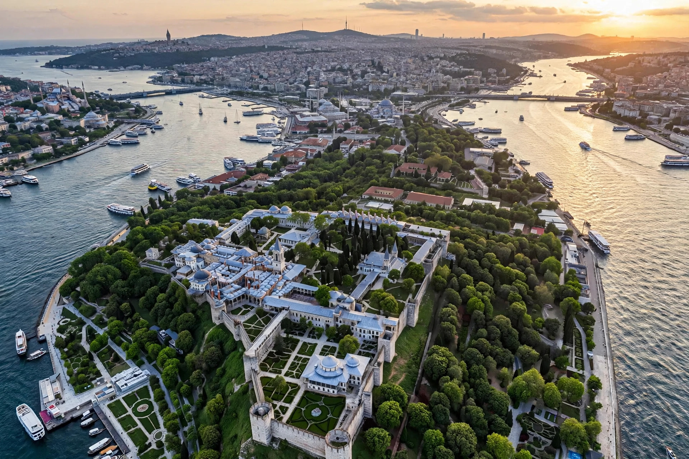

Topkapı Palace
| Topkapı Palace | |
|---|---|
| Location | Fatih, Istanbul, Turkey |
| Construction begun | 1459, by order of Sultan Mehmed II |
| Function | Main residence and administrative headquarters of the Ottoman sultans, c. 1465–1856 |
| Current use | Museum (since 1924) |

The Topkapı Palace (Turkish: Topkapı Sarayı, "Cannon Gate Palace") is a large museum and library in the Fatih district of Istanbul, Turkey. From the 1460s until the completion of Dolmabahçe Palace in 1856, it served as the administrative centre of the Ottoman Empire and the main residence of its sultans. Occupying the Seraglio Point at the tip of the historic peninsula, overlooking the Golden Horn and the Sea of Marmara, the palace complex consists of four main courtyards and many smaller buildings, surrounded by walls and gardens.
History
After conquering Constantinople in 1453, Mehmed II ordered the palace built in 1459 on the site of the acropolis of ancient Byzantium. Unlike the unitary palaces of Europe, Topkapı grew organically: each sultan added pavilions, kiosks and chambers over four centuries, so that at its height some 4,000 people lived and worked within its walls. The palace was the setting for the Divan (imperial council), the imperial treasury, the palace school (Enderun) that trained Ottoman administrators, and the Harem, where the sultan's family and the Valide Sultan resided. In the mid-19th century Abdülmecid I moved the court to the European-style Dolmabahçe Palace. After the abolition of the sultanate, Topkapı was converted into a museum by decree of Mustafa Kemal Atatürk in 1924.
Layout
The First Courtyard, entered through the Imperial Gate, contained service buildings and the church of Hagia Irene. The Gate of Salutation leads to the Second Courtyard, the administrative heart, with the Imperial Council hall and the palace kitchens, which now display collections of Chinese porcelain. Beyond the Gate of Felicity lies the Third Courtyard, the sultan's private domain, containing the Audience Chamber, the Library of Ahmed III, the Treasury — displaying objects such as the Spoonmaker's Diamond and the Topkapı Dagger — and the Pavilion of the Holy Mantle, which houses relics of the Prophet Muhammad including the Holy Mantle and the Sacred Standard. The Fourth Courtyard contains pleasure pavilions such as the Baghdad and Revan kiosks and the Mecidiye Kiosk, with views over the Bosphorus.
Collections
The museum's holdings include Ottoman imperial collections of arms and armour, calligraphy and manuscripts, miniatures, thrones, jewels, robes, and one of the world's finest collections of Chinese celadon and porcelain, acquired because such wares were believed to change colour in the presence of poison. Topkapı forms part of the UNESCO World Heritage listing of the Historic Areas of Istanbul (1985).
See also
Ottoman Empire · Mehmed II · Dolmabahçe Palace · Hagia Sophia · Roxelana